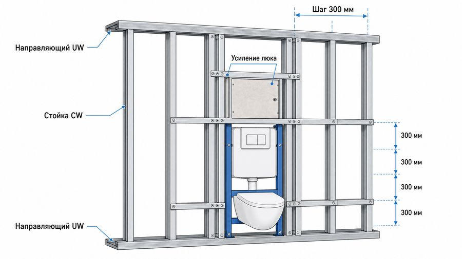
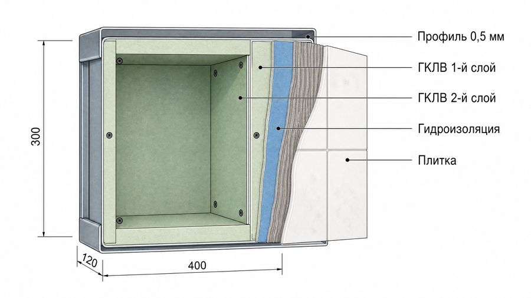

Коротко: Чтобы короб из ГКЛ в ванной не потрескался через полгода, нужны три вещи: профиль толщиной 0,5 мм (а не 0,35 мм), шаг стоек 300–400 мм и двойной слой ГКЛВ 12,5 мм на инсталляции. Люк под плитку нужно усиливать двойным профилем до обшивки. Ошибка с люком или каркасом стоит 15 000–37 000 руб. переделки. Ниже — точные размеры, пошаговый монтаж, смета и чек-лист.
Размеры коробов: сколько места они забирают
Короб делают не «лишь бы закрыть», а с запасом под профиль, ГКЛ, плитку и технологические зазоры.
Короб для стояка (вертикальный)
Для стояка канализации 110 мм и двух труб ХВС/ГВС 20–32 мм реальная глубина короба редко бывает меньше 180–200 мм. Если есть ревизия, косой тройник или утепление, закладывайте 220–250 мм. Ширина в углу — 350–450 мм.
Совет: экономия 30–40 мм часто оборачивается тем, что люк 200х300 мм уже не встаёт или не открывается на нужный угол.
Короб под инсталляцию (горизонтальный)
Рамы инсталляции имеют высоту 1120–1200 мм и монтажную глубину 135–200 мм. После облицовки итоговая глубина готового короба обычно 180–230 мм. Если сверху делать полку длиной 1200–1800 мм, её надо усиливать, иначе при нагрузке 15–25 кг на край возможен прогиб 2–4 мм.
| Параметр | Узкий короб для стояка | Короб под инсталляцию |
|---|---|---|
| Ширина | 350–450 мм | 500–1200 мм |
| Глубина | 180–250 мм | 180–230 мм |
| Высота | 2400–2700 мм | 1120–1200 мм (или до потолка) |
| Обшивка | 1–2 слоя ГКЛВ 12,5 мм | 2 слоя ГКЛВ 12,5 мм |
| Люк | 200х300, 300х400 мм | 200х300 мм или через кнопку |

Каркас и материалы: на чем нельзя экономить
Слабое место короба — не гипсокартон, а каркас. Профиль 0,35–0,4 мм дешевле на 15–25%, но под плиткой и люком он играет.
Требования к профилю и обшивке
- Профиль UW/CW 50 мм (для длинных полок — 75 мм).
- Толщина стали — не менее 0,5 мм.
- Шаг стоек — 300–400 мм (а не 600 мм).
- Перемычки через 400–600 мм по высоте.
- Двойной профиль вокруг люка и на наружных углах.
| Материал | Толщина | Цена | Где уместен |
|---|---|---|---|
| ГКЛВ | 12,5 мм | 450–700 руб./лист | Узкие короба, экраны |
| ГВЛВ | 10–12,5 мм | 650–1 050 руб./лист | Под тяжелую плитку |
| ЦСП (цементная плита) | 10–12 мм | 900–1 800 руб./лист | Мокрые зоны, высокая ударная нагрузка |
Защита от влаги
Даже если короб не в душевой, на его низ попадает вода при мытье пола. По полу и примыканиям пройдитесь обмазочной гидроизоляцией на высоту 100–200 мм. В душевой зоне — до 1800–2000 мм. Расход — 2,0–3,0 кг/м² в 2 слоя.
Пошаговая инструкция монтажа
- Замерьте все выступающие точки: трубы, фитинги, ревизию, счётчики, раму инсталляции. Добавьте к самой выступающей точке запас 20–30 мм.
- Нанесите разметку на пол, стены и потолок. Допуск по плоскости — 2–3 мм на 1 м.
- Закрепите направляющие UW с шагом 300–400 мм (на отрезок 1200 мм — 4–5 точек).
- Поставьте стойки CW с шагом 300–400 мм. Вокруг люка, наружного угла и кнопки инсталляции — удвоение.
- Смонтируйте перемычки через 400–600 мм по высоте.
- Заложите шумоизоляцию (минвата 35–50 кг/м³, 50 мм) для снижения шума воды.
- Обшейте каркас. Для инсталляции — 2 слоя ГКЛВ 12,5 мм, для стояка — 1–2 слоя.
- Сместите швы второго слоя минимум на 200 мм относительно первого.
- Проклейте швы лентой, зашпаклюйте, загрунтуйте. На углы — перфоуголок.
- Нанесите гидроизоляцию по низу и примыканиям.
- Привяжите раскладку плитки к люку и кнопке инсталляции.
- Уложите плитку на клей 3–5 мм. Следите, чтобы не было пустот по краю люка.
Совет: люк лучше привязывать к раскладке плитки ещё до сборки короба. Сдвиг на 30–50 мм иногда позволяет уйти от узкой подрезки 40–60 мм и сэкономить 2–3 плитки.

Смета: сколько стоит короб в ванной 4 м²
Типовой санузел 1,7х2,35 м, высота 2,6 м. Короб для стояка (0,42х0,22 м) и короб под инсталляцию (1,18х0,2 м), люк 300х400 мм, плитка 300х600 мм.
| Позиция | Цена |
|---|---|
| Профиль UW/CW 0,5 мм | 2 500–4 800 руб. |
| ГКЛВ 12,5 мм (3–5 листов) | 1 500–3 500 руб. |
| Саморезы, дюбели, уголки | 900–2 000 руб. |
| Люк под плитку 300х400 мм | 4 500–12 000 руб. |
| Шпаклевка, лента, грунт | 1 000–2 200 руб. |
| Гидроизоляция (4–5 м²) | 1 000–2 200 руб. |
| Плиточный клей | 1 000–2 100 руб. |
| Плитка (4,5–5 м²) | 4 500–15 000 руб. |
| Работа: сборка каркаса и обшивка | 10 000–22 000 руб. |
| Работа: укладка плитки | 8 000–16 000 руб. |
| Итого | 34 900–85 000 руб. |
Частые ошибки и цена исправления
| Ошибка | Последствие | Цена переделки |
|---|---|---|
| Шаг стоек 600 мм | Плоскость гуляет, плитка трескается | 8 000–15 000 руб. |
| Один слой ГКЛВ на инсталляции | Вибрация, трещины по швам | 10 000–25 000 руб. |
| Нет доступа к фильтрам и счётчикам | Разбор плитки для обслуживания | 10 000–25 000 руб. |
| Люк без усиления рамки | Дверца провисает, шов расходится | 15 000–37 000 руб. |
Чек-лист перед обшивкой
- Запас от труб до плоскости короба — 20–30 мм.
- Профиль — 0,5 мм, шаг стоек — 300–400 мм.
- Рамка люка усилена двойным профилем.
- На инсталляции — 2 слоя ГКЛВ.
- Швы второго слоя смещены на 200 мм.
- Гидроизоляция по низу и примыканиям — 100–200 мм.
- Раскладка плитки привязана к люку и кнопке.
- Сантехнические соединения проверены до зашивки.
Вопросы и ответы
Какой профиль использовать для короба в ванной?
UW/CW 50 мм толщиной не менее 0,5 мм. Профиль 0,35 мм дешевле, но под плиткой и люком он играет, что приводит к трещинам.
Сколько слоев ГКЛВ нужно на инсталляцию?
Два слоя по 12,5 мм. Один слой может не выдержать вибрацию от кнопки, монтажа сантехники и опирания при уборке.
Какой размер люка выбрать?
Если в коробе есть счётчики и фильтры — минимум 300х400 мм. Если только кнопка инсталляции, можно обойтись 200х300 мм или доступом через кнопку.
Нужно ли шумоизолировать короб?
Да, если за коробом стоит канализационный стояк. Минвата 50 мм плотностью 35–50 кг/м³ снижает шум воды примерно на 2–4 дБ.
Через сколько можно укладывать плитку на ГКЛВ?
После высыхания шпаклевки и грунтовки (обычно 12–24 часа). Гидроизоляции нужно 24–48 часов до укладки плитки.
Источники
Материал подготовлен с опорой на следующие документы и данные:
Дисклеймер
Материалы журнала «Ремонт на примерах» носят информационный характер. Приведённые цены, сроки и нормативы являются ориентировочными: они зависят от региона, состояния объекта, уровня исполнителей и текущей рыночной ситуации, поэтому не могут служить точной сметой или гарантией результата. Перед началом работ проконсультируйтесь со специалистами и проверяйте актуальные требования нормативных документов. Редакция не несёт ответственности за решения, принятые на основании этих материалов.